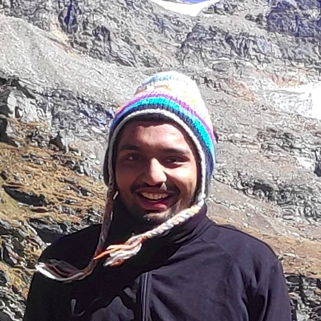
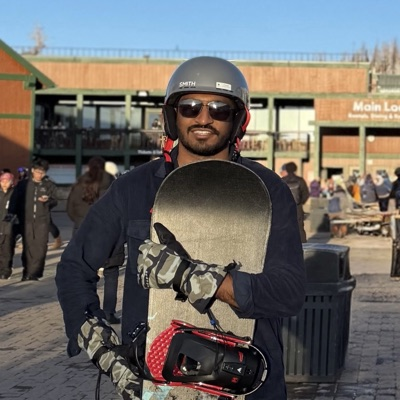
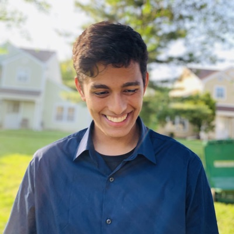
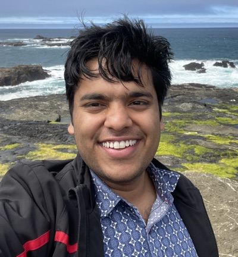
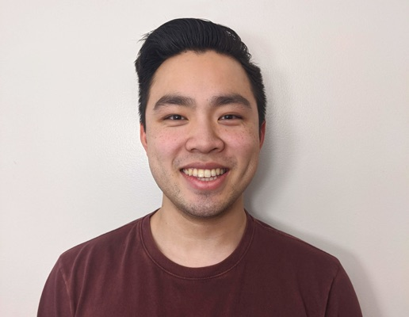
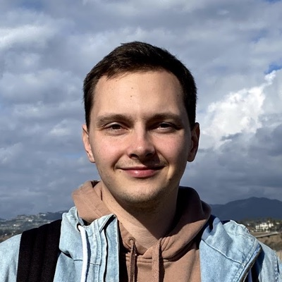

About
Teleoperation has driven progress in robot learning, but it is fundamentally limiting: control interfaces introduce latency and reduce degrees of freedom, producing demonstrations that lack the natural dexterity and diverse strategies humans exhibit in everyday manipulation. Human video and simulation each offer qualitatively different strengths. Unscripted human video captures whole-body coordination, tool use, and manipulation strategies that no teleoperation interface can reproduce. Simulation enables exploration of contact-rich dynamics, failure recovery, and edge cases at scale. Yet both carry challenges: embodiment mismatch and the sim-to-real gap. The central question is not just how do we get more data, but how do we extract what makes these sources qualitatively richer, and bridge the gaps that separate them from deployable robot skills?
This workshop focuses on methods that:
- Learn dexterous manipulation skills from human demonstrations, going beyond what teleoperation interfaces can capture
- Build world models grounded in real-world physics from diverse, in-the-wild video data
- Use small, high-quality teleoperation data as an anchor alongside large-scale, diverse off-domain sources
- Bridge embodiment and sim-to-real gaps to transfer manipulation skills across domains
We bring together researchers working on learning from human data, simulation, and robot teleoperation to share insights and collaborate on building more general-purpose manipulation systems.
Invited speakers
Schedule
Friday, June 5, 2026. Times are Vienna local time (CEST).
| Time | Session |
|---|---|
| 08:30–09:00 | WelcomeOrganizers |
| 09:00–09:30 | Jitendra MalikUC Berkeley |
| 09:30–10:00 | Edward JohnsImperial College London |
| 10:00–11:00 | Break and poster session 1 |
| 11:00–11:30 | Danfei XuGeorgia Tech |
| 11:30–12:00 | Karen LiuStanford University |
| 12:00–12:30 | Katerina FragkiadakiCMU |
| 12:30–13:30 | Lunch break |
| 13:30–14:00 | Yue WangUSC |
| 14:00–14:30 | Roberto Martín-MartínUT Austin |
| 14:30–15:00 | Spotlight talks4 papers |
| 15:00–16:00 | Break and poster session 2 |
| 16:00–16:20 | Steve XieSponsor talk, Lightwheel |
| 16:20–17:20 | Panel discussionInvited speakers |
| 17:20–17:30 | Closing remarks |
Panel discussion
16:20–17:20
The invited speakers discussed questions such as:
- Does the community truly need to move beyond teleoperation? Should we favor massive (but noisy) human/sim data, or smaller (but clean) robot datasets?
- What are the "hidden" costs behind using human/simulation data? Can we combine both sources to get the best of both worlds?
- Is small, high-quality teleop data a necessary "anchor" for grounding large-scale human video/simulation training?
Accepted papers
29 papers
All accepted papers were presented as posters in one of two sessions. Four were also selected for spotlight talks.
Spotlight talks
14:30–15:00
- MolmoB0T: Large-Scale Simulation Enables Zero-Shot Manipulation
- UniDex-ViTac: Learning Unified Visuo-Tactile Dexterous Manipulation Policy from Human Video Data
- DemoDiffusion: One-Shot Human Imitation using Pre-trained Diffusion Policy
- Humanoid Bimanual Dexterous Manipulation Driven by Egocentric Video
Poster session 1
10:00–11:00, 14 posters
- Reconstructing Hand-Held Objects in 3D from Images and Videos
- MotionTrans: Human VR Data Enable Motion-Level Learning for Robotic Manipulation Policies
- One-Shot Learning of Manipulation from RGB-D Videos via Object-Centric Interaction Reasoning
- Humanoid Bimanual Dexterous Manipulation Driven by Egocentric Video Spotlight
- YUBI: Yielding Universal Bidigital Interface for Bimanual Dexterous Manipulation at Scale
- Dex4D: Task-Agnostic Point Track Policy for Sim-to-Real Dexterous Manipulation
- Tune to Learn: How Controller Gains Affect Robot Policy Learning
- CRAFT: Video Diffusion for Bimanual Robot Data Generation
- Whole-Body Mobile Manipulation using Offline Reinforcement Learning on Sub-optimal Controllers
- Point Bridge: 3D Representations for Cross Domain Policy Learning
- IFG: Internet-Scale Guidance for Functional Grasping Generation
- MolmoB0T: Large-Scale Simulation Enables Zero-Shot Manipulation Spotlight
- HumanoidMimicGen: Data Generation for Loco-Manipulation via Whole-Body Planning and Adaptation
- X-Diffusion: Training Diffusion Policies on Cross-Embodiment Human Demonstrations
Poster session 2
15:00–16:00, 15 posters
- UniDex-ViTac: Learning Unified Visuo-Tactile Dexterous Manipulation Policy from Human Video Data Spotlight
- PHABS: A Handheld Haptic Device for Force-Annotated Bimanual Demonstration Data
- Learning Whole-Body Humanoid Locomotion via Motion Generation and Motion Tracking
- Learning Quadruped Locomotion from Casual Videos
- HOMimic: Distilling Manipulation Trajectories from Human Videos via Multi-Stage Interaction Reasoning and Taxonomy-Aware Retargeting
- Few-Shot Learning of Tool-Use Skills with Proximity and Tactile Sensing
- Object-Centric Reward Learning from Action-Free Videos for Long-Horizon Manipulation Beyond Teleoperation
- Semantic–Geometric Task Representations for Bimanual Manipulation from Human Demonstrations to Robot Action Planning
- MobileEgo Anywhere: Open Infrastructure for Long-Horizon Egocentric Data on Commodity Hardware
- Learning Sim-Grounded Policies for Bimanual Rope Manipulation from Human Teleoperation Data
- DemoDiffusion: One-Shot Human Imitation using Pre-trained Diffusion Policy Spotlight
- Overcoming Distribution Shifts with Autonomous Embodied Data Collection
- Dream2Flow: Bridging Video Generation and Open-World Manipulation with 3D Object Flow
- UniLatent: Cross-Embodiment Transfer via Latent Observation Alignment
- Learning Structured Policies for General Humanoid Loco-Manipulation
Organizers
- Kushal Kedia Cornell University
-

Rutav Shah UT Austin -

Dvij Kalaria UC Berkeley - Zubair Irshad Toyota Research Institute
-
 Jingyun Yang
Stanford University
Jingyun Yang
Stanford University
-

Satvik Sharma Stanford University -

Himanshu Gaurav Singh UC Berkeley -

Tyler Lum Stanford University -

Sergey Zakharov Toyota Research Institute - Jeannette Bohg Stanford University
- Antonio Loquercio University of Pennsylvania
- Yuke Zhu UT Austin
Contact
Questions about the workshop? Email us at icra-beyond-teleop@googlegroups.com.